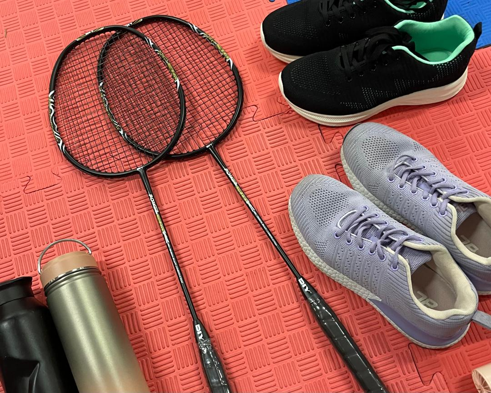
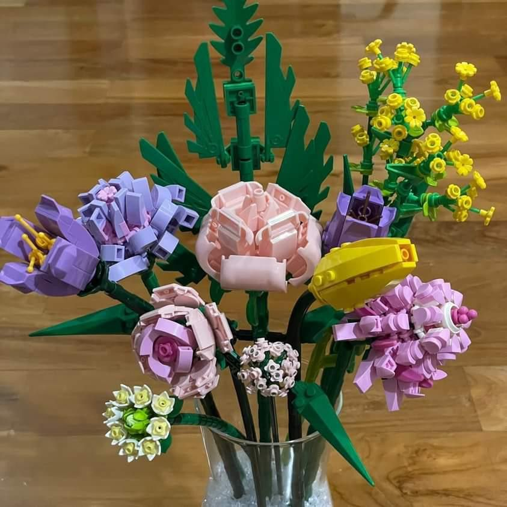
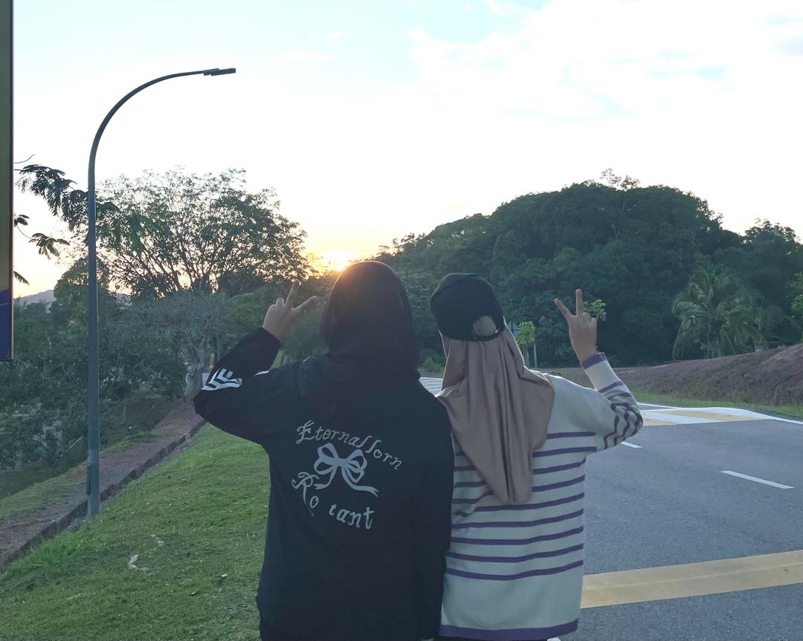
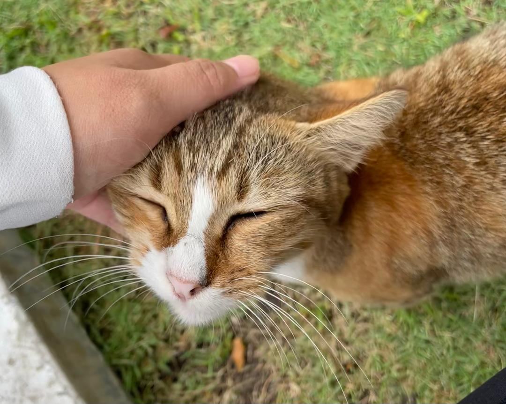

About Me
My name is Farah Hanim Binti Ahmad Nasir, and I’m 20 years old. I was born on 10th October 2005 and I live in Mersing, Johor, a lovely place that’s famous for its beautiful and relaxing beaches. I’m currently studying for a Diploma in Information Management at UiTM Segamat. So far, the experience has been both interesting and meaningful, especially when I have friends who are always ready to help. I love watching Aisyah Habshee and Muhsin Yusni on YouTube during my leisure time. However, I would describe myself as an introvert who enjoys learning new things at my own pace and exploring activities that make me feel happy and calm. I love collecting experiences that help me grow and understand myself better. I also hope to achieve my academic goals, particularly earning a place on the Dean’s List in this final semester, so that I can graduate with first-class honors, and I hope to achieve ANC in my future degree through consistent hard work.📝🤲
Youtube Channel
This is my favourite youtube channel: Aisyah Habshee
My Skills
Technical: Word Processing | Canva | Information Retrieval | Record Management | HTML
Soft: Teamwork | Time Management | Problem Solver | Adaptable | Handling Pressure | Creativity
🧕 Culinary Expert 🧕 Teacher 🧕 Businesswoman |
|
|
| Hobbies | |||
|---|---|---|---|
| 1) Playing Badminton |
2) Build A Flower LEGO |
3) Brisk Walking |
4) Playing with cats |
|  |  |  |  |
| Badminton tournament with Dayana |
This is my first flower lego set |
Brisk walking in the evening with Nana and Irdina |
Found a street cat at the museum |